1. Какой переключатель изображен на рисунке?
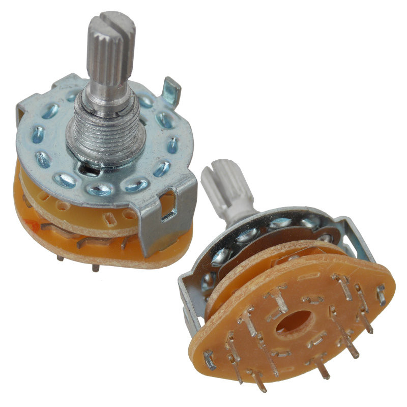
2. Условное графическое обозначение какого переключателя изображено на рисунке?
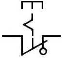
3. Какое позиционное обозначение соответствует кнопочному выключателю?
4. Какую особенность имеет переключетель изображенный на рисунке?
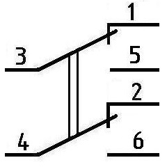
5. Какой выключатель изображен на рисунке?
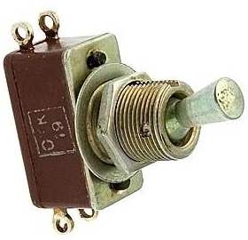
6. Какую особенность имеют переключатели с зависимой фиксацией?
7. Цифровой мультиметр в режиме прозвонки цепи подключили к выводам выключателя с разомкнутыми контактами.
Какая информация отобразится на экране мультиметра? Выберите номер рисунка с правильным показанием.
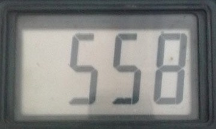
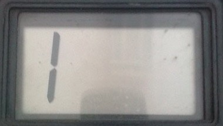
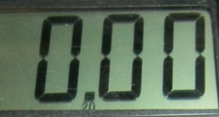
8. Какое обозначение указывает, что контакты выключателя автоматически возвращаются в исходное положение при превышении напряжения больше допустимого значения?
9. К каким выводам переключателя П2К нужно подключить провода, чтобы использовать его для включения или выключения питания электронного устройства?
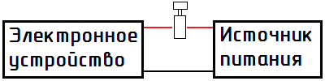
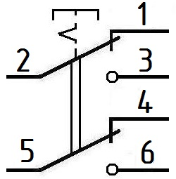
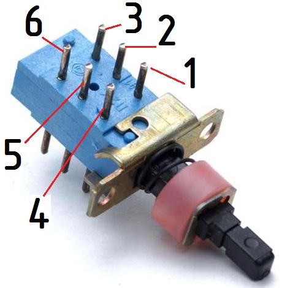
10. Какой тип контактов изображен на рисунке?
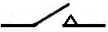
11. Условное графическое обозначение какого переключателя изображено на рисунке?
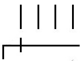
12. Условное графическое обозначение каких контактов изображено на рисунке?
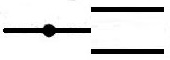